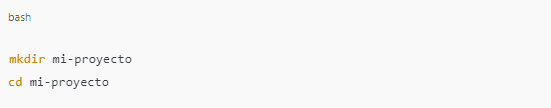
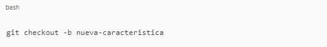
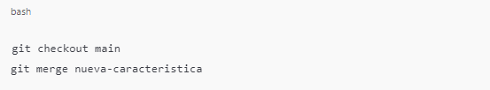
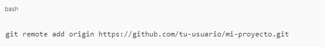
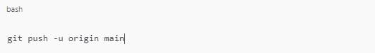

Cómo Usar Git
Para comenzar a utilizar Git, lo primero que necesitas hacer es inicializar un repositorio en tu máquina
local. Esto se logra con el comando git init. A continuación, te muestro cómo hacerlo.

Pasos para Inicializar un Repositorio:
Crea un nuevo directorio: Abre tu terminal y crea un nuevo directorio para tu proyecto. Navega a este
directorio.
2. Inicializa el repositorio: Ejecuta el siguiente comando para inicializar un repositorio vacío.

Este comando crea un subdirectorio .git que contiene todos los archivos necesarios para el repositorio.
Las ramas son una forma de trabajar en diferentes características o correcciones de un proyecto sin
afectar la rama principal (generalmente llamada main o master). Esto es útil para mantener el código
organizado y facilitar la colaboración.

Creación de Ramas:
1. Crea una nueva rama: Usa el comando git checkout -b seguido del nombre de la nueva rama.

2. Realiza cambios y haz commits: Haz los cambios que desees en tu proyecto, luego añade los cambios y
haz un commit.

3. Combinar Ramas: Para combinar los cambios de la rama nueva-caracteristica a la rama principal,
primero
debes cambiar a la rama principal.
Luego, ejecuta el comando git merge:
Este comando une los cambios de nueva-caracteristica en main.
Para colaborar con otros o guardar tu trabajo en la nube, es necesario agregar un repositorio remoto,
como uno en GitHub.
Pasos para Conectar tu Repositorio Local a uno Remoto:
1. Crea un nuevo repositorio en GitHub: Ve a GitHub y crea un nuevo repositorio (no selecciones la
opción
de inicializarlo con un README).
2. Conecta el repositorio remoto: En tu terminal, agrega el repositorio remoto con el siguiente comando,
reemplazando URL_DEL_REPOSITORIO con la URL de tu nuevo repositorio en GitHub.
Envía tus cambios al repositorio remoto: Usa el comando git push para enviar tus commits al repositorio
remoto.